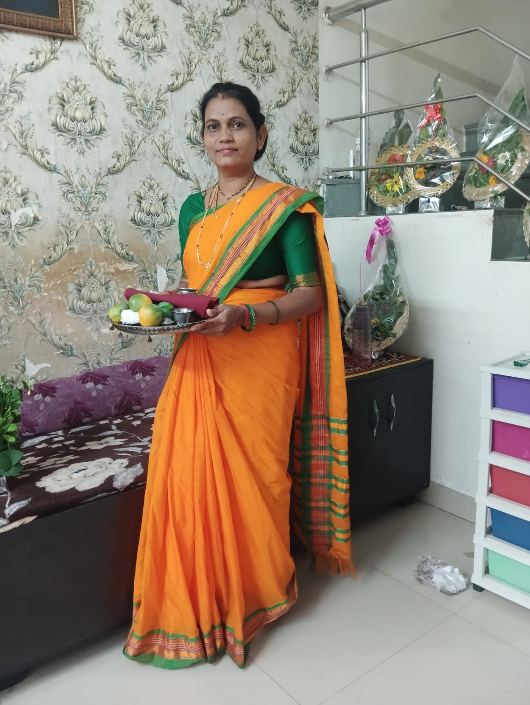
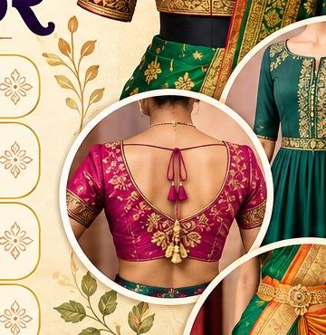
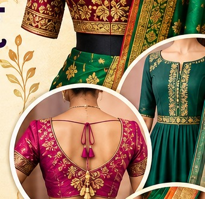
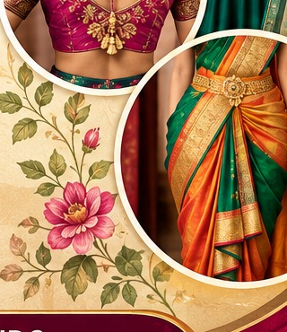
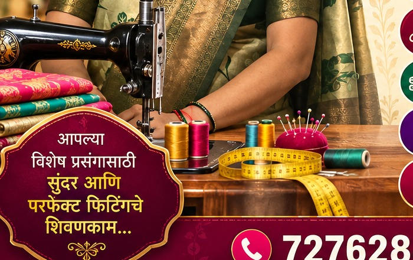

ब्लाऊज शिवणकाम
तुमच्या मापानुसार, आवडीनुसार आणि साडीच्या लूकला साजेसं ब्लाऊज.
प्रत्येक कपड्यात तुमची आवड, तुमची स्टाईल आणि तुमचा खास दिवस दिसावा — यासाठी मनापासून केलेलं शिवणकाम.

माप घेण्यापासून शेवटच्या धाग्यापर्यंत — प्रत्येक कामात नीटनेटकेपणा आणि फिटिंगला प्राधान्य.
तुमच्या मापानुसार, आवडीनुसार आणि साडीच्या लूकला साजेसं ब्लाऊज.
कुर्ती, गाऊन, फ्रॉक, टॉप आणि रोजच्या वापरापासून खास प्रसंगापर्यंत.
फिटिंग बदल, साईज बदल आणि कपड्याची छोटी-मोठी दुरुस्ती.
नवीन कट, नेकलाइन, स्लीव्ह्ज आणि तुमच्या मनातली डिझाईन.
पारंपरिक लूक जपत आधुनिक आवडीला साजेसं ब्लाऊज आणि स्टायलिंग.
शिवणकाम फक्त कपडा जोडणं नाही. माप, फिटिंग, फिनिशिंग आणि तुमची पसंती — सगळं एकत्र जुळणं महत्त्वाचं.




शहरात मोठमोठी फॅशन स्टोअर्स आली, तरी आपल्या ओळखीच्या टेलरकडे कपडा देताना जो विश्वास वाटतो, त्याची जागा वेगळीच.
तुमच्या साडीचा रंग, ब्लाऊजची आवड, मापाची सवय, आणि प्रसंग काय आहे — हे समजून घेऊन शिवणकाम करण्याचा आमचा प्रयत्न असतो.
आपल्या महाराष्ट्रात सण म्हणजे फक्त दिवस नाही — घर, माणसं, साडी आणि आठवणींचा सोहळा. त्या दिवसासाठी कपडाही खास हवा.
पैठणी किंवा नऊवारीला शोभेल असा पारंपरिक ब्लाऊज, कोपरापर्यंत स्लीव्ह्ज आणि सुंदर नेकलाइन.
→ पारंपरिक लूकसाडी, पार्टीवेअर ब्लाऊज, कुर्ती किंवा ड्रेस — कुटुंबासोबतच्या प्रत्येक भेटीसाठी खास फिटिंग.
→ उत्सवी लूकनऊ दिवसांच्या रंगांना जुळणारे ब्लाऊज, चोळी किंवा पारंपरिक लूकसाठी कस्टम डिझाईन.
→ रंगीत लूकआरती, दर्शन आणि पाहुणचार — आरामदायी पण उठावदार कपडे, दिवसभर टिकणारं फिटिंग.
→ आराम + स्टाईलहळद, साखरपुडा, लग्न आणि रिसेप्शनसाठी वेगवेगळ्या लूकचे ब्लाऊज आणि ड्रेस.
→ ब्रायडल स्पर्शतुमच्या शरीररचनेनुसार नीट माप.
नेक, स्लीव्ह्ज, कट — तुमच्या आवडीनुसार.
कपड्याच्या प्रकारानुसार काळजीपूर्वक काम.
गरज असेल तर छोटा बदल करून परफेक्ट फिनिश.
तुमचा कपडा घेऊन या किंवा आधी फोनवर बोलून वेळ ठरवा.